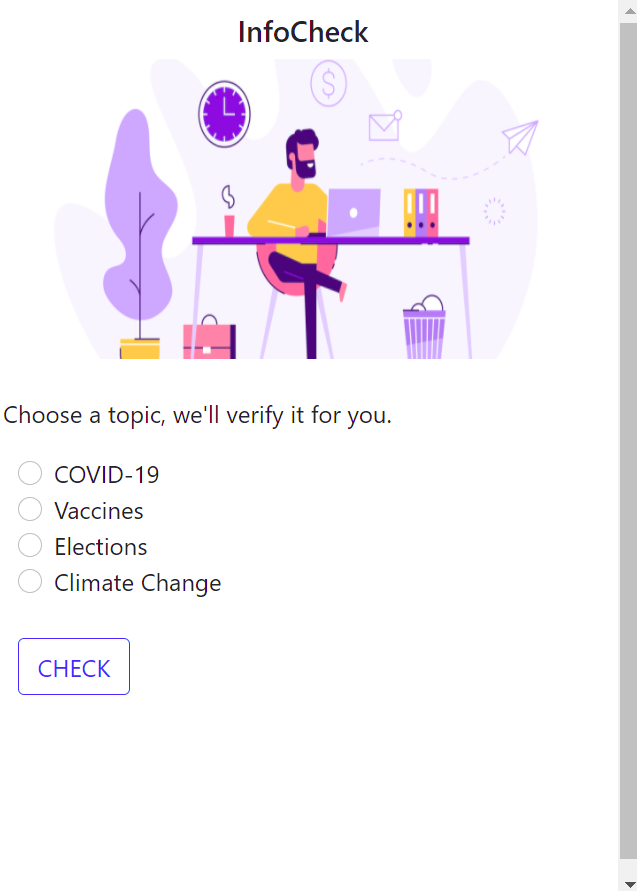
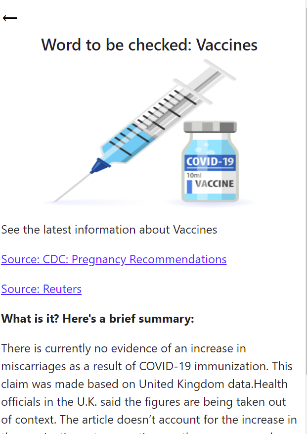
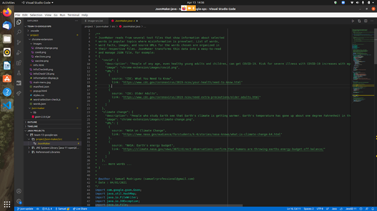

-
"InfoCheck"
Date: March 2021
Project Type: SPS '21 Group Project
Created with a team a Chrome extension to provide legitimate information on popular topics to prevent misinformation.
Worked on the front end of the extension, creating the connection between a JSON file and a JavaScript file to ease the way of retrieving the topics which resulted in a structured user interface with the information displayed correctly.
  Read more about this project here.
-
De la Casa" Prototype
Date: January 2021
Project Type: Passion Project (PR Covid-19 Ideathon)
Developed with a team a solution that aimed to endeavor the re-boost of the Puerto Rican economy by building a system that focuses on local and small businesses buildup. Won “Best Technical Prize” (Sponsored by Holberton School).
Worked on the User Interface prototype in Adobe XD and the businesses information system using WinForms in C#.

-
"Galaxy Wars"
Date: December 2020
Project Type: Operating Systems Project
Project Requirements: Develop a creative and innovative program implementing threads. The program must have sound, movement using the run() method of the thread class, and a Graphical User interface(GUI).
Developed with a partner a creative “galaxy shooting” game implementing threads in Java.
Worked on the thread that displayed the timer and the class that updated of the score every time the user hit a spaceship.

See the project here.
-
"Monoloro Zoo Database"
Date: December 2020
Project Type: Database Deisgn and Programming Project
Development of a database for the "Monoloro Zoo". Designed the relation matrix, ERD, and physical design with sample data that resulted in an Oracle SQL-programmed database for the “Monoloro Zoo” that implemented queries and an SQL Plus report. Plus.
See the project here.
My Projects
The projects are organized in descendant order. Feel free to look and download the codes of the following via my Github profile linked below.
 Github: claudiapao10
Github: claudiapao10